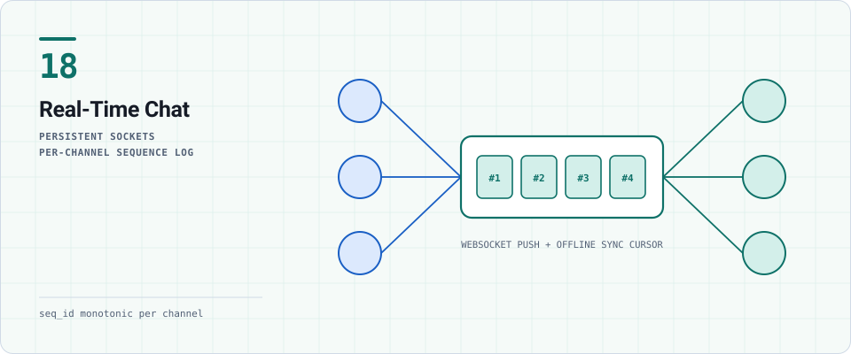
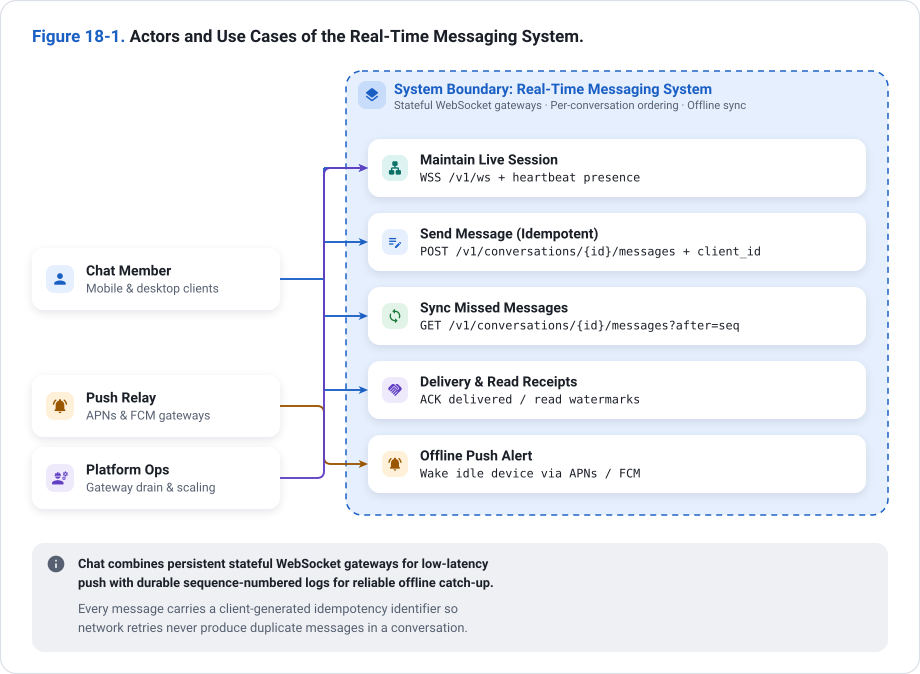
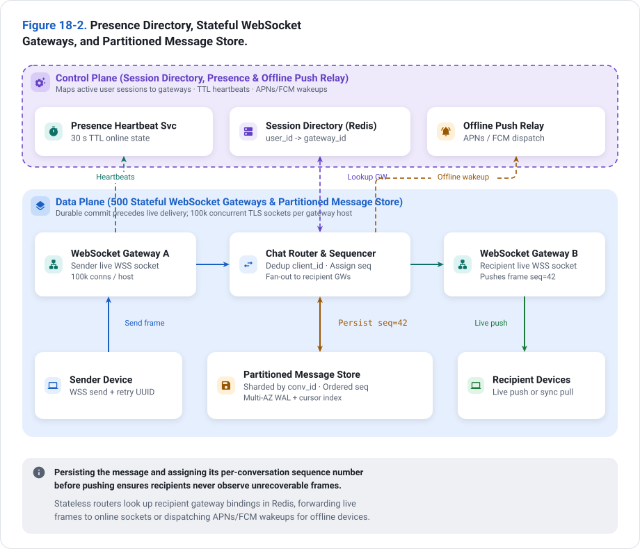

18. Real-Time Chat: System Design
A real-time messaging platform delivers conversational text and media across unreliable mobile networks while upholding strict perceptual invariants: messages must appear on online recipients’ screens in under half a second, survive hours or days of offline disconnection without loss, never duplicate under retries, and render in the exact same causal order on every participant’s device. Users detect violations immediately because an out-of-order reply or a repeated message renders a conversation visibly broken.
In this chapter, we design a globally scalable real-time chat system supporting 50,000,000 concurrent online connections and 20,000,000,000 messages per day. By separating minimal stateful WebSocket Gateways from stateless Chat Routers and anchoring every conversation to a strongly consistent per-conversation monotonic sequence number, we collapse reliable delivery, gap detection, duplicate suppression, multi-device synchronization, and offline recovery into a single cursor arithmetic protocol.
In this chapter, we cover
- actors, use cases, functional requirements, sub-500 ms delivery and ordering SLOs, explicit non-goals, and 50-million-connection gateway and storage capacity bounds
- WebSocket wire frames, idempotent HTTP/2 message submission, cursor catch-up APIs, and time-bucketed Cassandra/ScyllaDB message schemas
- separation of the control plane (presence heartbeat service, Redis session directory, APNs/FCM offline push relay) from stateful WebSocket gateways and partitioned message logs
- transport selection (polling, long polling, WebSocket), gateway connection isolation, monotonic per-conversation sequencing,
client_iddeduplication, and offline cursor recovery via interactive traces - 1:1 versus large-group fan-out, multi-device cursors and cumulative watermarks, viewport-scoped presence control, hot-channel storage partitioning, and Signal Double Ratchet E2EE implications
- failure-mode mitigation matrices, operational SLIs, production architectures (WhatsApp Erlang/FreeBSD, Discord ScyllaDB, Slack, Facebook Messenger MQTT), and verification via
code/chatsim
18.1 Requirements, Actors, and Capacity Bounds
Actors and Use Cases
We organize the real-time messaging boundary around three external actor groups (Figure 18-1).

| Actor | Operation | Concrete Scenario |
|---|---|---|
| Chat Member | Maintain WebSocket (WSS /v1/ws), send message (POST /v1/conv/{id}/messages), sync cursor (GET /v1/conv/{id}/messages?after=seq), send read/delivery watermarks | Mobile or desktop client sends messages reliably across elevator disconnects and synchronizes state consistently across phone, tablet, and laptop |
| External Push Relay (APNs / FCM) | Dispatch wake-up notification for offline devices | Operating system wakes a suspended background application or renders an alert when a message commits while the recipient has no open WebSocket |
| Platform Operations | Orchestrate rolling gateway drains, scale hot-channel partitions, and monitor delivery latency | SRE drains stateful gateway hosts in small batches so reconnecting phones spread TLS handshakes cleanly across healthy gateways |
Functional Requirements
| No. | Functional Requirement |
|---|---|
| 0 | A member can send text and media-reference messages to 1:1 conversations and group channels (from 2 members up to 100,000 community members). |
| 1 | Every online recipient device receives a newly committed message over its persistent WebSocket connection within 500 ms (p99). |
| 2 | Every message within a conversation is assigned a strict gapless monotonic sequence number (1, 2, 3, ...), ensuring all participants observe an identical total message order. |
| 3 | Retried message submissions carrying the same caller-generated client_id are stored and sequenced exactly once (end-to-end send idempotency). |
| 4 | A device reconnecting after any offline interval recovers all missed messages deterministically by presenting its local last_received_seq cursor, suppressing out-of-order gaps and duplicate deliveries. |
| 5 | The system supports multi-device synchronization per user, cumulative sent / delivered / read watermarks, scoped online presence, and optional End-to-End Encryption (E2EE) over opaque ciphertext payloads. |
Non-Functional Requirements and SLOs
| No. | Property | Target Specification | Architectural Consequence |
|---|---|---|---|
| 0 | Delivery Latency | p50 <= 80 ms, p99 <= 500 ms end-to-end (sender submit to online receiver render, intra-region) | Mandates persistent full-duplex WebSockets (RFC 6455) and in-memory Redis session directory lookups (< 2 ms) |
| 1 | Durability & Ordering | Zero loss of any message confirmed as sent; strict linearizable per-conversation sequence order (PC/EC) | Durable quorum commit in the conversation shard leader precedes both the sender sent ACK and recipient gateway push |
| 2 | Availability | 99.95% sending and receiving availability (<= 21.6 minutes/month) | Multi-AZ stateful gateway pools with client exponential-backoff reconnects; session directory treated strictly as a hint |
| 3 | Secondary Consistency | Eventual consistency (1 to 10 s) for presence status, typing indicators, and read watermarks | Keeps secondary signals off the durable message commit path so presence storms never block chat messages |
| 4 | Scale | 50,000,000 concurrent online connections and 20,000,000,000 messages per day (~231,500 msg/s avg, ~1,000,000 msg/s peak) | Demands 500+ tuned WebSocket gateways (100,000 sockets/host) and horizontally sharded LSM-tree message storage |
Non-Goals and Scope Boundaries
We exclude the following capabilities so the architecture remains centered on reliable real-time messaging:
- Real-time audio and video calling: Interactive voice/video calls operate over UDP/SRTP (
WebRTC) with jitter buffers and media SFUs rather than reliable TCP/WebSocket message logs. - Full-text search inside E2EE conversations: Because end-to-end encrypted payloads are opaque ciphertext on servers, E2EE search executes locally over each device’s decrypted SQLite index.
- Rich media storage and transcoding: Attached images, voice notes, and video clips are uploaded out-of-band to the Object Store (Chapter 16) and referenced by immutable signed object IDs inside chat frames.
Back-of-the-Envelope Capacity Bounds
We size gateway concurrency, socket memory, write throughput, and message storage for 50,000,000 concurrently online devices and 20,000,000,000 daily messages averaging 200 bytes per record:
| Resource Dimension | Arithmetic Derivation | Provisioned Bound |
|---|---|---|
| WebSocket Gateway Fleet | 50,000,000 open sockets / 100,000 sockets per host | 500 gateway hosts (~167 hosts per AZ across 3 AZs; +20% headroom = 600 hosts) |
| Per-Gateway Socket Memory | 100,000 sockets * ~40 KB (kernel TCP + TLS state + user-space ring buffers) | ~4.0 GB RAM per gateway (fits comfortably inside standard 32 GB instances) |
| Session Directory RAM (Redis) | 50,000,000 active device sessions * 128 B (user_id, device_id, gw_id, ttl) | 6.4 GB raw (~19.2 GB across 12 sharded Redis nodes with replication) |
| Message Write Rate (Avg / Peak) | 20,000,000,000 / 86,400 s = 231,481 msg/s; 4x peak event burst | 231,500 msg/s avg, 926,000 msg/s peak |
| Daily Message Storage Growth | 20,000,000,000 msg/day * 200 B | 4.0 TB/day logical (12.0 TB/day raw at 3x replication; ~1.46 PB/year logical) |
| Presence Heartbeat Traffic | 50,000,000 devices / 30 s lease renewal interval | 1.67 million lightweight lease renewals/s (handled via batched per-gateway heartbeats) |
Notice a key systems optimization in the final row: if 50,000,000 devices each issued individual Redis EXPIRE RPCs every 30 seconds, the Session Directory would endure 1.67M ops/s of presence overhead alone. Instead, gateways keep per-socket liveness locally over WebSocket PING/PONG frames and renew their host-level session lease in bulk batches, cutting Session Directory RPC volume by two orders of magnitude.
18.2 External API and Data Contracts
Clients maintain one persistent TLS-encrypted WebSocket (WSS /v1/ws) for low-latency bidirectional push frames and use idempotent HTTP/2 (or multiplexed WebSocket RPCs) for message submission and cursor catch-up.
External Wire and HTTP Contracts
Send a message (idempotent via Idempotency-Key / client_id):
POST /v1/conv/301/messages HTTP/2
Host: api.chat.example
Authorization: Bearer <token>
Idempotency-Key: u9a1-phone-a-000512
Content-Type: application/json
{
"client_id": "u9a1-phone-a-000512",
"ciphertext_b64": "YW55IGNpcGhlcnRleHQ...",
"content_type": "text/plain"
}
HTTP/2 201 Created
Content-Type: application/json
{
"conversation_id": "301",
"seq": 42,
"client_id": "u9a1-phone-a-000512",
"committed_at": "2026-11-20T13:08:05.112Z"
}
Catch up after disconnection (GET /v1/conv/{id}/messages?after=seq):
GET /v1/conv/301/messages?after=1&limit=100 HTTP/2
Host: api.chat.example
Authorization: Bearer <token>
HTTP/2 200 OK
Content-Type: application/json
{
"conversation_id": "301",
"messages": [
{ "seq": 2, "sender_id": "u_bob", "body": "hello?", "committed_at": "2026-11-20T13:07:10Z" },
{ "seq": 3, "sender_id": "u_bob", "body": "we are starting", "committed_at": "2026-11-20T13:07:15Z" },
{ "seq": 4, "sender_id": "u_bob", "body": "table 4", "committed_at": "2026-11-20T13:07:22Z" }
],
"has_more": false
}
Server-to-client WebSocket push frame (WSS /v1/ws):
{
"type": "message.push",
"conversation_id": "301",
"seq": 42,
"sender_id": "u_alice",
"client_id": "u9a1-phone-a-000512",
"payload": "YW55IGNpcGhlcnRleHQ...",
"committed_at": "2026-11-20T13:08:05.112Z"
}
Partitioned Message Store Schema (ScyllaDB / Cassandra Layout)
Messages are append-only and read overwhelmingly as contiguous recent ranges (seq > cursor). Partitioning solely by conversation_id causes unbounded partition growth for multi-year channels; adding a 10-day time bucket keeps every partition bounded below 100 MB while keeping recent range scans inside a single partition:
-- Wide-column LSM-tree table (ScyllaDB / Cassandra) optimized for sequential range catch-up
CREATE TABLE conversation_messages (
conversation_id BIGINT,
time_bucket INT, -- floor(unix_seconds / 864000) -> 10-day bucket
seq BIGINT, -- Strict monotonic per-conversation sequence number
client_id TEXT, -- Sender-generated UUID for write deduplication
sender_id BIGINT,
payload_bytes BLOB, -- Plaintext or Signal Double Ratchet ciphertext
committed_at TIMESTAMP,
PRIMARY KEY ((conversation_id, time_bucket), seq)
) WITH CLUSTERING ORDER BY (seq ASC);
-- Per-user shared read watermark (synchronized across phone, tablet, and desktop)
CREATE TABLE read_watermarks (
user_id BIGINT,
conversation_id BIGINT,
last_read_seq BIGINT,
updated_at TIMESTAMP,
PRIMARY KEY (user_id, conversation_id)
);
18.3 High-Level Architecture: Control Plane vs. Data Plane
We isolate session discovery, presence liveness, and offline push notification dispatch inside the control plane while dedicating 500 lightweight stateful WebSocket Gateways and partitioned message sequencers to the low-latency delivery data plane (Figure 18-2).

Component Responsibilities
| Component | Plane | State Held | Failure Impact and Mitigation |
|---|---|---|---|
| Session Directory (Redis Cluster) | Control | Ephemeral (user_id, device_id) -> gateway_id mapping with 30 s lease TTL | Treated strictly as a routing hint; losing a shard delays live push until devices renew or reconnect, while zero messages are lost |
| Presence Heartbeat Service | Control | Online/idle status with 15 to 30 s offline grace debounce and viewport subscription maps | Eventual consistency; isolates high-fan-out presence churn from message delivery |
| Offline Push Relay (Chapter 13) | Control | APNs / FCM device push tokens and badge counters | Asynchronous queue-backed dispatch; wakes suspended mobile apps so they reconnect and pull via cursor |
WebSocket Gateways (500 stateful hosts) | Data | 100,000 live TLS/WebSocket file descriptors per host (epoll/kqueue), auth context | Minimal proxy logic so feature deploys never drop sockets; host crash triggers jittered client reconnect + cursor catch-up |
Chat Router and Sequencer (200 hosts) | Data | Stateless routing tier + conversation-sharded sequencer leases (dedup LRU + monotonic next_seq) | Auto-scaled across three AZs; consistent hashing routes each conversation_id to its owning sequencer shard |
Partitioned Message Store (100 shards x 3 replicas) | Data | Durable ordered conversation logs and client_id deduplication table | Quorum 3-AZ commit ensures confirmed messages survive any disk, host, or AZ failure |
End-to-End Message Lifecycle
- Client Submit: Sender’s device generates a random UUID
client_id(u9a1), renders the message optimistically as pending in the local UI, and sends it over its open WebSocket to Gateway A (or viaPOST /v1/conv/{id}/messages). - Deduplication and Sequencing: Gateway A forwards the frame to the owning Chat Router and Sequencer for
conversation_id = 301. The sequencer checks(conversation_id, sender_id, client_id)against its deduplication store. If seen previously, it returns the originalseqwithout writing; otherwise it assigns the next monotonicseq = 42and commits durably to the Partitioned Message Store quorum. - Sender
sentACK: Immediately upon durable quorum commit, the sequencer replies{seq: 42}to Gateway A -> Sender’s device, which transitions the UI message from pending to sent and slots it at position42. - Live Push or Offline Wakeup: The Chat Router queries the Session Directory for every recipient’s active
(device_id -> gateway_id)mappings (plus the sender’s other logged-in devices). For every online device (for example, Receiver on Gateway B), the router pushes{conv: 301, seq: 42, payload}over an internal gRPC stream to Gateway B, which writes the WebSocket frame down the recipient’s socket. For recipients with no active session, the router enqueues a wake-up alert to the Offline Push Relay (APNs/FCM). - Delivery & Read Watermarks: Once Receiver’s device persists
seq = 42locally, it sends a lightweight cumulativedelivery_ack(conv=301, seq=42)watermark back up its WebSocket, which routes to the sender’s online devices.
18.4 Stateful Gateways, Sequencing, Idempotency, and Offline Catch-Up
Transport Comparison: Why Persistent WebSockets Win
Ordinary HTTP request-response forces clients to initiate every exchange. Three patterns overcome server-to-client push, with sharply different network and CPU costs:
| Transport Pattern | Delivery Latency | Idle Request Overhead | Server Per-Client State | Suitability at 50M Devices |
|---|---|---|---|---|
Short Polling (1 s) | 0 to 1,000 ms (500 ms avg) | 50,000,000 empty HTTP requests/s (4.3 trillion/day) | None | Unviable; wastes massive radio battery and server CPU |
| HTTP Long Polling | Near-zero (< 100 ms) | Re-establishes request every 30 s + after every message | 1 held HTTP socket | Fallback only for restrictive corporate proxies blocking WebSocket upgrades |
WebSocket (RFC 6455) / MQTT (Chosen) | Near-zero (< 50 ms) | Zero HTTP headers; lightweight 2-byte ping frames every 30 s | 1 persistent TCP/TLS socket (~40 KB RAM) | Standard production choice for real-time mobile and web messaging |
Isolating Stateful Gateways and Preventing Reconnect Storms
Holding 100,000 long-lived TLS connections per server introduces a critical operational hazard: restarting a gateway binary drops 100,000 active sessions instantaneously. Two architectural rules contain this blast radius:
- Strip all business logic from gateways: Gateways terminate TLS, validate auth tokens on handshake, maintain the in-memory
socket_id -> fdtable, and forward frames over multiplexed internal gRPC pools to stateless Chat Routers. Because gateways rarely change code, feature deployments occur dozens of times daily with zero socket churn. - Jittered client reconnection backoff: When a gateway host crashes unexpectedly,
100,000mobile devices detect TCP teardown within seconds. If all100,000phones reconnect immediately, the resulting TLS handshake storm can cascade across healthy gateways. Client SDKs therefore apply truncated exponential backoff with full jitter (sleep = random(0, min(30s, 1s * 2^attempt))), spreading reconnection load smoothly over15 to 30 seconds.
Idempotent Send and Per-Conversation Cursor Recovery
Mobile links drop acknowledgements routinely. Without deduplication, retrying an unacknowledged send appends the same text under two consecutive sequence numbers. Interactive Trace 18.A walks through client_id deduplication across a lost confirmation.

On the receiving side, wall-clock timestamps fail because phone clocks skew by seconds or minutes, placing replies ahead of questions. Assigning strict gapless integers (1, 2, 3, ...) per conversation at the shard leader enables every recipient device to maintain one integer cursor (last_displayed_seq) and enforce a deterministic three-branch state machine on every incoming frame m:
m.seq == cursor + 1: Displaymimmediately and advancecursor = m.seq.m.seq > cursor + 1(Gap detected): Do not displaymout of order (optionally buffer in memory); immediately issueGET /v1/conv/{id}/messages?after={cursor}to fetch the missing interval cleanly.m.seq <= cursor(Duplicate): Discardmwithout modifying UI state.
Interactive Trace 18.B steps through all three faults (disconnect gap, out-of-order frame arrival, and duplicate redelivery) on a single mobile phone.

In Figure 18-3, we combine the online push path and offline cursor catch-up path, showing why the server never tracks per-device delivery queues: whether a phone entered a subway tunnel for 10 seconds or remained powered off for 7 days, recovery executes the identical GET ?after={cursor} range query.

18.5 Group Fan-Out, Presence Control, Hot Channels, and E2EE
1:1 vs. Large-Group Fan-Out and Multi-Device Sync
For 1:1 chats and ordinary group conversations (<= 500 members), the Chat Router resolves active sessions for all members in one batched Redis MGET, groups recipients by target gateway_id, and dispatches one coalesced RPC per gateway.
For massive broadcast channels (10,000 to 500,000 members in Slack workspaces or Discord communities), pushing every message body immediately to 100,000 sockets creates the same write/egress fan-out storm analyzed in Chapter 15. Large channels therefore switch automatically at a membership threshold (N > 500) to subscription-scoped pub/sub: only gateways hosting members who currently have that specific channel open in the foreground subscribe to the channel’s live fan-out topic; all other members receive an eventual unread badge (latest_seq) and pull messages lazily from their cursor when opening the channel.
Multi-device users (phone + laptop + tablet) require zero extra storage duplication: every device tracks its own local delivered_seq cursor independently so a powered-off laptop catches up fully on boot, while a single per-user read_watermarks table (max(last_read_seq)) synchronizes unread counters immediately across all devices.
Controlling Presence Fan-Out and Hot Channels
Unfiltered presence broadcasting (pushing "online" / "offline" to all 500 contacts every time a mobile radio toggles between Wi-Fi and LTE) routinely generates 5x to 10x more network traffic than actual chat messages. Three controls bound presence cost:
- Viewport-scoped subscriptions: Clients subscribe only to presence updates for contacts currently visible on screen (typically
15 to 30rows), unsubscribing immediately upon scrolling away. - Offline hysteresis debounce (
15 to 30 s): When a WebSocket disconnects, the Presence Service delays broadcastingofflinefor20 seconds; brief cellular handoffs reconnect within the grace window with zero status flicker. - Ephemeral typing frames: Typing indicators (
"Alice is typing") bypass persistent storage completely and expire client-side after5 seconds.
On the storage tier, a single viral Discord channel receiving 500 messages/s and 50,000 concurrent readers creates an extreme hot partition on (conversation_id, time_bucket). Production deployments place a Read-Through Request-Coalescing Service in front of ScyllaDB (Discord’s Rust Data Services tier) that holds the hottest 50 recent messages of active channels in memory and coalesces 10,000 identical catch-up range queries into a single storage read.
End-to-End Encryption (E2EE) Architectural Consequences
Enabling E2EE via the Signal Double Ratchet protocol preserves the entire messaging pipeline unchanged: servers still assign seq numbers, commit opaque payload_bytes, route frames through WebSocket gateways, and replay missed ranges by cursor. Every property depending on server visibility, however, shifts to client devices:
- Key distribution and group rekeying: For 1:1 chats, the server hosts a signed public PreKey Bundle (
X3DH) so a sender can initiate an encrypted session even while the recipient is offline. For encrypted groups, each sender distributes a symmetric Sender Key encrypted pairwise to every group member; removing any member forces every remaining participant to rotate Sender Keys (O(N)pairwise key exchanges), capping encrypted group sizes practically around1,000members (addressed at larger scale by IETF MLS / TreeKEM,O(log N)). - Offline notifications and history sync: APNs/FCM notifications carry either an opaque wake-up signal or encrypted payload decrypted by a mobile notification service extension, and newly linked devices must transfer historical decryption keys directly from an existing authenticated device over an encrypted local channel.
18.6 Failure Modes, SLIs, and Production Systems
Failure Mode and Mitigation Matrix
| Failure Mode | Blast Radius | Detection Signal | Automated Mitigation |
|---|---|---|---|
| WebSocket Gateway Crash | 100,000 connected devices drop sockets (0.2% of fleet); zero messages lost | Gateway health check failure and sudden drop in active socket count | Clients reconnect to healthy gateways using full-jitter exponential backoff (1 to 30 s) and issue GET ?after=cursor to recover any messages sent during the gap |
| Session Directory (Redis) Shard Loss | Live push temporarily misses 1/12 of users until sessions refresh | Redis cluster slot error or push-miss fallback ratio spike | Durable store still commits every message; gateways re-register live session leases automatically within 30 s, and offline push / cursor sync heals missed live frames |
| Message Store Shard Leader Failure | 1 to 3 s write pause for 1% of conversations (1 of 100 shards) | Raft leader heartbeat loss / sequencer commit timeout | Follower wins election within 1 to 3 s; clients retry with identical client_id, guaranteeing zero duplicates and monotonic seq continuity |
| Hot Community Channel Overload | Single ScyllaDB partition saturates disk/CPU under 50,000 concurrent readers | Per-partition read latency p99 > 100 ms | Read-through request-coalescing cache layer collapses identical GET ?after=seq bursts into 1 storage read; 10-day time buckets prevent unbounded partition growth |
| APNs / FCM Push Provider Outage | Delayed background wake-up banners for offline phones; online chats unaffected | Push relay error rate > 5% or queue depth surge | Circuit breaker queues alerts with TTL expiry (5 min); users opening the app recover all messages cleanly via cursor sync |
Operational SLIs, SLOs, and Alert Thresholds
- End-to-End Online Delivery Latency SLI: Elapsed time from server commit to recipient device
delivery_ackon online 1:1 sessions, targetingp99 <= 500 ms(intra-region); alert ifp99 > 800 msfor 5 minutes. - Message Commit Availability & Durability SLI:
99.95%write success rate onPOST /v1/conv/{id}/messageswith zero sequence gaps (max_seq - count == 0per conversation audit). - Gateway Connection Churn SLI: Rolling 1-minute disconnect rate across the gateway fleet; spikes above
3%per minute indicate network brownouts or accidental simultaneous gateway restarts. - Cursor Catch-Up Latency SLI:
p99 <= 150 msforGET /v1/conv/{id}/messages?after=seq(100-message page), ensuring snappy conversation recovery immediately after subway or tunnel reconnects.
Production Benchmarks
| Production System | Gateway / Transport Layer | Storage & Sequencing Engine | Architectural Distinction |
|---|---|---|---|
Erlang/OTP (ejabberd-derived) on tuned FreeBSD holding 2 to 3 million sockets per server | Mnesia / ephemeral relay queues (store-and-forward deleted after delivery) + client SQLite history | Famous extreme socket density per host and strict Signal E2EE where servers retain zero permanent plaintext history | |
| Discord | Elixir gateway cluster (Guild actors) over WebSockets + Rust Data Services coalescer | Migrated from MongoDB -> Cassandra -> ScyllaDB ((channel_id, bucket) + Snowflake ID) | Documented scaling past trillions of messages; Rust request-coalescing middleware eliminated Cassandra/ScyllaDB hot-channel partition storms |
| Slack | Stateful Channel Servers (Flannel edge cache) over WebSockets | Vitess-sharded MySQL per workspace | Uses workspace-scoped edge caches (Flannel) to offload bootstrap metadata and presence fan-out during enterprise morning login spikes |
| Facebook Messenger | Lightweight MQTT persistent broker connections | Iris / HBase / MySQL message storage | Chose MQTT over raw HTTP/WebSocket on early mobile networks for minimal byte framing overhead and low radio power consumption |
18.7 Simulation Verification
Reproduce sequence-gap detection, cursor catch-up, and duplicate suppression. Run cargo run --release -p chatsim inside distributed-systems-from-the-ground-up/code/ to simulate a phone receiving message 1 online, disconnecting while messages 2, 3, and 4 commit on the server, receiving message 4 alone out of order, reconnecting with cursor 1, and receiving a duplicate redelivery of message 3.
$ cargo run --release -p chatsim
the phone is online
phone shows 1: are you coming?
the phone loses its connection, and 3 messages are sent
server stores 2: hello?
server stores 3: we are starting
server stores 4: table 4
message 4 reaches the phone alone, over a connection that drops again
phone ignores 4: message 2 is missing
the phone reconnects and reports that it has message 1
phone shows 2: hello?
phone shows 3: we are starting
phone shows 4: table 4
the server repeats message 3, because an acknowledgement was lost
phone ignores 3: already shown
messages on the server: 4, shown on the phone: 4
From this execution transcript, we validate all three invariants of the per-conversation cursor protocol:
- Out-of-order protection: When message
4arrived while the phone’s cursor stood at1, the rule4 > 1 + 1prevented rendering message4ahead of missing messages2and3. - Exact gap recovery: Reporting cursor
1upon reconnect allowed the server to replay the exact suffix[2, 3, 4]without tracking any per-device delivery queue on the server. - Idempotent duplicate suppression: When a lost acknowledgement triggered a duplicate delivery of message
3while the cursor stood at4, the rule3 <= 4discarded the duplicate cleanly, terminating with4messages on the server and the exact same4messages displayed once in strict order on the phone.
18.8 Terminology and References
Engineering Glossary
| Term | Definition |
|---|---|
WebSocket (RFC 6455) | A full-duplex persistent framing protocol upgraded from HTTP/1.1 or HTTP/2 allowing low-latency bidirectional push over a single TCP/TLS connection. |
| Stateful Gateway | A minimal edge server dedicated exclusively to terminating and maintaining hundreds of thousands of long-lived client sockets, isolated from stateless application logic. |
| Session Directory | An in-memory lease-based mapping ((user_id, device_id) -> gateway_id) used as a fast routing hint for live message push. |
| Per-Conversation Sequence Number | A strict gapless monotonic integer (1, 2, 3, ...) assigned by a conversation’s shard leader that defines the single canonical message order for all participants. |
| Client Sync Cursor | The highest contiguous sequence number persisted and displayed by a specific device, used to detect gaps, suppress duplicates, and fetch missed history deterministically. |
| Cumulative Watermark Receipt | A single integer (delivered_seq or read_seq) acknowledging all messages up to and including that sequence number in one idempotent update. |
| Double Ratchet / Sender Keys | Cryptographic primitives of the Signal E2EE protocol deriving fresh per-message keys for forward secrecy and post-compromise security. |
References
- I. Fette and A. Melnikov, IETF RFC 6455, The WebSocket Protocol, 2011.
- R. Reed, “1 Million Is So 2011 (2 Million Concurrent Connections on FreeBSD/Erlang)”, WhatsApp Engineering Blog, 2012.
- S. Vishnevskiy, “How Discord Stores Billions of Messages”, Discord Engineering Blog, 2017.
- B. Ingram, “How Discord Stores Trillions of Messages”, Discord Engineering Blog, 2023.
- M. Marlinspike and T. Perrin, “The Double Ratchet Algorithm”, Signal Specifications, 2016.
- IETF RFC 9420, The Messaging Layer Security (MLS) Protocol, 2023.
- L. Zhang, “Building Facebook Messenger”, Facebook Engineering Blog, 2011.